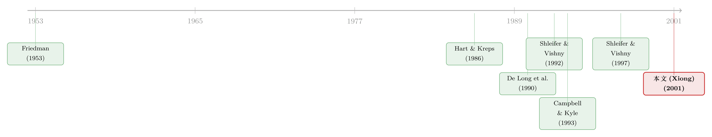

套利者亏了钱，于是他和噪声交易者站到了一起
本文读的是 Xiong (2001, Journal of Financial Economics)：用一个连续时间均衡模型说明，做收敛交易 (convergence trading) 的套利者平时为市场提供流动性、压低波动，但一旦亏了钱、风险承受能力被侵蚀，他们就会被迫平仓，反而把最初的冲击放大——极端时甚至与噪声交易者朝同一个方向交易。这正是 1998 年长期资本管理公司 (LTCM) 濒临崩溃时的画面。
1 一个让人不安的问题
先讲一个几乎是金融学常识的结论。
弗里德曼 (Friedman, 1953) 在《实证经济学论文集》里写下过一句被反复引用的话：投机者总是「低买高卖」，所以他们必然稳定价格。逻辑听上去无懈可击——如果一个投机者高买低卖，他迟早会亏到退出市场；能活下来的，一定是那些买便宜、卖昂贵、从而把价格拉回基本面的人。于是几代人都相信：理性、逐利的套利者，是市场的减震器。
这套逻辑在 1998 年夏天被现实狠狠地打了脸。
那一年，云集了一众诺奖得主和华尔街顶级交易员的对冲基金 LTCM，做的正是教科书式的「收敛交易」：押注两个高度相似、但价格暂时背离的资产，价差迟早会收敛。比如做多一只抵押债券、做空一只期限相近的美国国债；又比如做多「旧券」(off-the-run)、做空「新券」(on-the-run) 的国债价差（关于这个经典价差，可参见《利差明明在收敛，利润却归零：一笔被 repo 悄悄吃掉的「免费午餐」》）。这些价差从基本面看几乎是「稳赚」的。可当俄罗斯违约引爆全球避险情绪、价差不但不收敛反而进一步张开时，LTCM 巨亏、被迫平仓，结果价差被它自己的平仓推得更开，流动性瞬间枯竭，波动率冲天。
于是一个很不弗里德曼的问题浮出水面：为什么这群最聪明、最理性的套利者，会在最关键的时刻，变成市场的放大器，而不是减震器？
这篇论文要做的，就是把这个「为什么」写成一个干净的均衡模型。它给出的答案只有四个字：财富效应 (wealth effect)。
2 三类交易者：把市场搭起来
要讲清财富效应，先得把舞台搭好。作者只用了三类交易者，三笔很轻的设定，就把一个连续时间、无穷期限的资产市场拼了出来。
第一类，噪声交易者 (noise traders)。 他们不为基本面交易，只是凭空向市场供给 y 股有风险的资产，而且这个供给是均值回复 (mean-reverting) 的——和 Campbell and Kyle (1993)、Wang (1993) 的设定一脉相承：
$$dy = -\lambda_y (y - \bar{y})\,dt + \sigma_y\,dz_y$$
直觉很简单：今天噪声交易者多卖了点，明天他们会慢慢卖回来。正是这个「会回头」的特性，给套利创造了机会——价格被推偏了，但你知道它迟早会回归。
第二类，长期投资者 (long-term investors)。 他们是一群「稳健」的价值投资者，只盯着基本面价值 F 与市场价格 P 的差距下单：
$$X_L = \frac{1}{\kappa}(F - P)$$
这条向下倾斜的需求曲线，斜率 κ 衡量的是他们提供的流动性：κ 越大，曲线越陡，流动性越差。作者借格雷厄姆 (Graham, 1973) 的话把 F − P 叫作「安全边际 (safety margin)」。关键在于，长期投资者口袋很深、没有财富约束——价格跌得越离谱，他们买得越多。后面我们会看到，正是这群人，给收敛交易者在危机时提供了一条出逃通道 (exit strategy)。
第三类，也是主角，收敛交易者 (convergence traders)。 他们完全理性、完全竞争，专门抓噪声交易者制造的短期机会。作者给了他们一个极其讲究的设定——对数效用 (logarithmic utility)：
$$J(t) = \max\; E_t \int_0^{\infty} e^{-\rho s}\ln(C_{t+s})\,ds$$
为什么偏偏是对数效用？因为它一举抓住了收敛交易的两个本质。其一，对数效用下的最优策略，会动态地按夏普比率 (Sharpe ratio) 下注——夏普比率代表机会的大小。其二，对数效用意味着递减的绝对风险厌恶：财富越接近零，人越是无限地厌恶风险。这就保证了收敛交易者永远不会把自己玩到破产——财富一缩水，他就主动收缩仓位。资本，就是他们的风险承受能力。
这两点——夏普比率（机会）和资本（承受力）——就是整篇论文要反复拨弄的两根弦。
3 财富效应：一个会自我喂养的循环
现在把三类人放进同一个市场，看价格是怎么被定出来的。
市场出清条件很朴素：收敛交易者的需求 X 加上长期投资者的需求 X_L，要等于噪声交易者的供给 y。把长期投资者的需求曲线代进去，就得到了整个模型的「核心方程」——价格函数：
$$P(y, W, F) = F - \kappa\big(y - X(y,W)\big)$$
请盯着这个式子多看一眼。它说的是：市场价格 P，不只取决于基本面 F 和噪声供给 y，还取决于收敛交易者的财富 W——因为他们的持仓 X(y,W) 是财富的函数。换句话说，套利者的钱包鼓不鼓，会直接写进价格里。这就是所有故事的源头。
接着，一个自然的问题是：财富 W 又是从哪儿来的？答案是从交易盈亏里来。收敛交易者的预算约束 dW = X\,dQ + (rW − C)\,dt，意味着只要他持有仓位 (X ≠ 0)，任何冲击都会通过盈亏改变他的财富。
于是一个自我喂养的循环出现了：
- 冲击 → 改变收益
dQ→ 改变套利者财富W； - 财富
W变 → 对数效用下的局部风险厌恶变 → 套利者再平衡 (rebalance) 仓位； - 再平衡 → 通过价格方程
(12)→ 再次推动价格、再次改变收益dQ……
任何对 dQ 的冲击，都能经由套利者的风险厌恶反馈回它自己。这个反馈，就是财富效应。而作者最漂亮的一步，是把这个循环的「增益」浓缩成了一个数——放大因子 (amplification factor) A(y,W)：
这个分母里的 κ X X_W，正是财富效应的「增益系数」。直觉是这样的：套利者持仓 X 越大、仓位随财富变动越敏感 (X_W)、市场越不流动 (κ)，那么「冲击→亏损→平仓→价格再动→再亏损」的回路就越强，A 就越大。当 κ X X_W 趋近 1，A 会被放大到无穷——这正是流动性瞬间蒸发的数学画面。
把 A 代回收益过程，作者证明了基本面冲击的波动率分量恰好是：
$$\sigma_D^Q(y,W) = \sigma_F\, A(y,W)$$
读法很干脆：资产真实的价格波动 σ_D^Q，等于基本面波动 σ_F 乘上放大因子 A。只要 A > 1，价格波动就超过了基本面本身的波动——这就是所谓「过度波动 (excess volatility)」，而且因为 A 随状态 (y, W) 变化，波动率还会时变。一个常贴现率的现值模型永远解释不了的东西，在这里被财富效应自然地生产了出来。
4 真正关键的一步：替代效应 vs 财富效应
到这里，模型已经能讲「基本面冲击会被放大」了——这部分其实不难：坏的基本面冲击让套利者亏钱，财富效应总是放大它。
但真正精彩、也真正反直觉的一步，在于噪声交易冲击。作者指出，一个把 y 推离均值的噪声冲击，会同时触发两股方向相反的力量：
替代效应 (substitution effect)。 噪声交易者卖得更狠，价格被压得更低，价差更大——这意味着收敛交易的夏普比率更高、机会更诱人。理性的套利者会加仓。这正是 Campbell and Kyle (1993) 研究过的力量，它让套利者逆着噪声交易做，从而压低波动、改善流动性。
财富效应 (wealth effect)。 但同一个冲击，也让套利者在现有仓位上当场亏钱，财富缩水，于是他要减仓。这股力量的方向，和替代效应正好相反。
于是整篇论文的张力，就凝结成这两股力量的拔河：
- 大多数时候，替代效应占上风。 套利者面对加剧的噪声交易选择加仓，吸收冲击，市场更稳、流动性更好。此时弗里德曼是对的。
- 偶尔，当财富效应压过替代效应——通常是套利者已经亏到资本严重受损、风险承受力枯竭时——套利者会面对加剧的噪声交易反而平仓。这一刻，他和噪声交易者朝同一个方向交易，把价格冲击放大、把流动性抽干。
于是反转出现了：弗里德曼笔下「永远稳定价格」的理性投机者，在资本受创的极端状态下，变成了destabilizing（去稳定化）的力量——他在价格高时买、价格低时卖，只因为他在割肉。这与 1998 年 LTCM 的剧本严丝合缝：巨亏 → 被迫平仓 → 流动性枯竭 → 波动飙升。
值得强调的是，模型里没有爆仓、没有保证金追缴、没有破产——对数效用保证了套利者的财富永远为正、债主永远愿意按无风险利率借钱给他。去稳定化纯粹是财富效应这一个机制造出来的，干净得让人心服。这一点也呼应了 Shleifer and Vishny (1997) 的洞见：风险厌恶本身就足以让套利变得去稳定化，只是他们没有给出正式的模型，而本文补上了这块拼图。
5 资本为什么进不来：把「有限套利」装进动态
读到这里你可能会问：套利者亏钱平仓，难道没人趁机进场抄底吗？为什么不会有新资本涌进来熨平这个循环？
这正是本文与「有限套利 (limits of arbitrage)」文献接驳的地方。作者直接在预算约束里写死了一条假设：收敛交易者得不到任何资本流入——没有新套利者进场，现有套利者也无法追加募资。
这条假设并非随手设定。它来自市场实践的两个特征：其一，套利者由于参与多个市场的信息成本，往往专一、且高杠杆（Merton, 1987；Shleifer and Vishny, 1997），组合既不分散又高度杠杆化，所以单一市场的冲击能引起财富的剧烈波动；其二，资本不能完美地跨市场流动——当套利者亏钱时，他既难募到新钱，也难找到别的套利者不打深折地接走仓位，因为代理问题会让投资者在他亏钱时反而撤资（这正是 LTCM 的遭遇）。这一笔，把 Shleifer and Vishny (1997) 的静态「有限套利」论证，推进到了市场动态的层面。
顺带一提，作者的姊妹篇 Kyle and Xiong (2001) 用一个有两个风险资产的类似框架说明：当套利者巨亏、需要在整个组合上平仓时，财富效应会让基本面毫不相干的资产价格一起下跌——这就是金融传染 (contagion)。（关于「火线甩卖」与传染的实证检验，可参见《同一个发行人的两只债券，戳破了「火线甩卖」的幻觉》。）
6 文献脉络
把这条线索拎出来看，它其实是一场关于「投机者到底稳不稳定价格」的长期辩论。
起点是 Friedman (1953) 的乐观断言：理性投机者必然稳定价格。质疑随之而来——Hart and Kreps (1986) 指出投机者会在价格上涨概率高时买入，而那未必是价格低的时候；De Long et al. (1990) 则说明，理性投机者去搭正反馈交易者的便车，也能让投机变得去稳定化。
与此并行的，是一条「资产负债表/抵押品放大」的脉络：Shleifer and Vishny (1992) 研究杠杆对企业资产甩卖的影响，Kiyotaki and Moore (1997) 与 Krishnamurthy (1998) 研究抵押品价值波动造成的放大。而真正离本文最近的两块基石，是 Campbell and Kyle (1993)——给出了没有财富效应的收敛交易均衡模型，和 Shleifer and Vishny (1997)——「有限套利」的旗帜性论文，但它是静态的、没有刻画机制。

本文站的位置很清楚：它把 Campbell and Kyle (1993) 的收敛交易模型装上财富效应这个引擎，又把 Shleifer and Vishny (1997) 的有限套利推进到连续时间动态均衡，最后用 1998 年的 LTCM 危机做了一个现实注脚。同期它还和研究保证金约束的 Aiyagari and Gertler (1998)、Gromb and Vayanos (2000) 遥相呼应——后者同样发现资本约束能制造超额波动。
7 评论与延伸（Q&A + 研究方向）
(a) 几个可能的疑问
Q：财富效应和替代效应，到底谁是「新东西」？
替代效应不是本文的发明，Campbell and Kyle (1993) 已经讲过——它让套利者逆噪声而动、稳定价格。本文真正新增的是财富效应，以及二者拔河的框架。贡献不在于「套利者会减仓」这个直觉，而在于把它写成一个内生的、能被
A(y,W)精确刻画的均衡机制。
Q：为什么非要用对数效用？换成 CARA 行不行？
对数效用做了两件别的效用做不到的事：一是递减的绝对风险厌恶，让财富自然成为风险承受力的度量、且永不破产；二是可以把所有套利者的财富加总成一个状态变量，无需关心套利者的具体人数。若用 CARA（常绝对风险厌恶），财富效应这条通道就被关掉了——这恰恰说明，财富效应是偏好假设的产物，而非套利本身的必然。
Q：模型里既没有保证金也没有破产，去稳定化是怎么冒出来的？
这正是本文最干净的地方。去稳定化不依赖任何爆仓或追缴机制——它纯粹来自对数效用下「亏钱→风险厌恶上升→主动平仓」的反馈。这与 Aiyagari-Gertler、Gromb-Vayanos 那条「保证金约束」的路径形成对照：本文说明，光是风险承受力随财富波动这一条，就足以让理性套利者变成放大器。
Q：均衡里说套利者长期能「收支平衡」，这靠谱吗？
模型刻画的是一个平稳分布 (stationary distribution)：长期看，套利者的交易利润恰好能与其消费打平。这让作者得以讨论「不同市场上收敛交易活动的多寡由什么决定」。但这是一个长期均衡的性质，它并不排除短期内财富剧烈波动、甚至逼近枯竭——那恰恰是危机发生的窗口。
Q：这模型能拿来做风险管理吗？
作者明确说这是卖点之一：高杠杆机构面对的极端流动性风险，正源于这个放大机制；模型给了风险经理一个研究市场均衡动态、预测极端风险的框架。坦白说这更像「概念工具」而非可直接校准的 VaR 模型——它的价值在于提醒你：你的对手盘（其他套利者）的资本状况，本身就是你的风险因子。
Q：它和「套利者手太短」的并购套利、同步风险那类文章是一回事吗？
同属「有限套利」大家庭，但机制不同。并购套利里的有限套利更多是「专业套利者资本有限、且业绩-资金敏感」（可参见《无风险的钱没人捡，因为捡钱的人手太短——并购套利里的「有限套利」》）；同步风险讲的是套利者不敢先动、怕别人不跟（参见《无风险的钱就在眼前，他们却宁愿再等等》）。本文则把焦点放在已建仓后、财富被冲击侵蚀导致的被迫平仓——是「拿着仓位的人」的故事。
(b) 几个可能的研究问题与提案
1. 把财富效应搬进公司债流动性危机的实证
【经济故事】2020 年 3 月公司债市场的「冲刺现金 (dash for cash)」与本文的剧本高度吻合：做市商/套利型基金资本受损 → 被迫减持 → 价差暴走、流动性枯竭。本文给了一个可检验的预测：去稳定化只在套利者资本严重受损时出现。 【可行性】高。用 TRACE 成交数据加上交易商资产负债表（FR Y-9C）或基金赎回数据，可以把「套利者财富」代理出来，检验流动性恶化是否在资本受损区间显著放大。已有相近工作（参见《差点死掉的那个市场：一场公司债流动性危机的微观解剖》），但直接对准「财富效应非线性」的检验仍有空间。
2. 外资持有人作为「财富效应」的跨境放大器
【经济故事】把本文的套利者换成在新兴市场做收敛交易的外资基金：当全球避险冲击侵蚀其资本，他们会同时从多国市场平仓，制造跨境传染——这正是 Kyle-Xiong (2001) 传染机制的实证版。 【可行性】中。需要按国别/基金的持仓与资金流数据（如 EPFR）配合「可投资度」变化做识别。难点在于把「替代效应」与「财富效应」在数据里分离，可能需要外生的全球资本冲击作为工具。
3. 收敛交易活动的横截面：哪些价差更容易「财富放大」？
【经济故事】模型预测，市场越不流动
(κ 大)、套利者杠杆越高(X_W 大)，放大因子A越大。那么不同的套利策略（旧券-新券、CDS-债券基差、配对交易）应当呈现系统性不同的「危机脆弱度」。 【可行性】中。可用各类基差在平静期与压力期的波动率比值作为A的代理，横截面回归到流动性指标与典型杠杆上。数据可得，识别的关键是控制掉基本面波动σ_F本身的差异。
4. 当套利者也能违约：把破产重新装回模型
【经济故事】本文用对数效用刻意排除了破产，换来了干净的解。但 LTCM 的故事里，真正的痛点恰恰是保证金追缴与债务约束。把破产/追缴加回去，财富效应与「硬约束」会如何叠加？是放大还是部分抵消？ 【可行性】中偏低。这是理论工作，需要在带违约边界的连续时间均衡里求解，技术上不轻松，但与 Gromb-Vayanos 一脉的模型可以对话。
8 我的判断
这篇论文的贡献，在于它把一个看似只能靠故事讲的现象——「聪明钱在危机里反而火上浇油」——压缩成了一个单一、透明的机制和一个可解读的数 A(y,W)。它最优雅的地方是「做减法」：不要保证金、不要破产、不要非理性，只留下对数效用下「财富即承受力」这一条，就推出了过度波动、时变波动和去稳定化投机。这种「用最少的假设撬动最反直觉的结论」，是好理论的标志。
但要诚实地说出它的边界。第一，去稳定化的结论强烈依赖对数效用与「资本零流入」这两条假设——前者关掉了别的效用形式，后者把有限套利做成了「硬设定」而非内生结果；一旦允许资本部分回流，放大效应会被削弱多少，模型没有回答。第二，模型是校准+数值求解的（用投影法解那个非线性二阶偏微分方程），它讲清了机制，却没有、也无意做严格的实证识别——LTCM 只是一个生动的注脚，不是一个检验。第三，长期投资者被刻意设成「次优、却深口袋」的提线木偶，他们提供的出逃通道是整个故事得以闭合的关键，但这条需求曲线的斜率 κ 在现实中是否稳定、是否也会在危机里变陡（流动性也会跑），是模型外生掉了的。
我接下来最想看到的，是把 A(y,W) 这个放大因子从理论里「拽」进数据——用 2008 与 2020 两次危机的公司债、国债基差数据，去估计套利者财富与流动性恶化之间那条非线性关系，看看现实中的市场，是不是真的有一个会随资本枯竭而失控的放大器。如果有，那本文写在二十多年前的这个机制，就不只是 LTCM 的墓志铭，而是每一次流动性危机的通用语法。
参考文献
- Campbell, J., Kyle, A. (1993). Smart money, noise trading and stock price behavior. Review of Economic Studies 60, 1–34.
- De Long, B., Shleifer, A., Summers, L., Waldmann, R. (1990). Positive feedback investment strategies and destabilizing rational speculation. Journal of Finance 45, 379–395.
- Friedman, M. (1953). Essays in Positive Economics. University of Chicago Press, Chicago, IL.
- Graham, B. (1973). The Intelligent Investor, 4th Edition. Harper & Row, New York, NY.
- Hart, O., Kreps, D. (1986). Price destabilizing speculation. Journal of Political Economy 94, 927–952.
- Kiyotaki, N., Moore, J. (1997). Credit cycles. Journal of Political Economy 105, 211–248.
- Kyle, A., Xiong, W. (2001). Contagion as a wealth effect. Journal of Finance 56, forthcoming.
- Merton, R. (1987). A simple model of capital market equilibrium with incomplete information. Journal of Finance 42, 483–510.
- Shleifer, A., Vishny, R. (1992). Liquidation values and debt capacity: a market equilibrium approach. Journal of Finance 47, 1343–1366.
- Shleifer, A., Vishny, R. (1997). The limits of arbitrage. Journal of Finance 52, 35–55.
- Wang, J. (1993). A model of intertemporal asset prices under asymmetric information. Review of Economic Studies 60, 249–282.
- Xiong, W. (2001). Convergence trading with wealth effects: an amplification mechanism in financial markets. Journal of Financial Economics 62(2), 247–292.